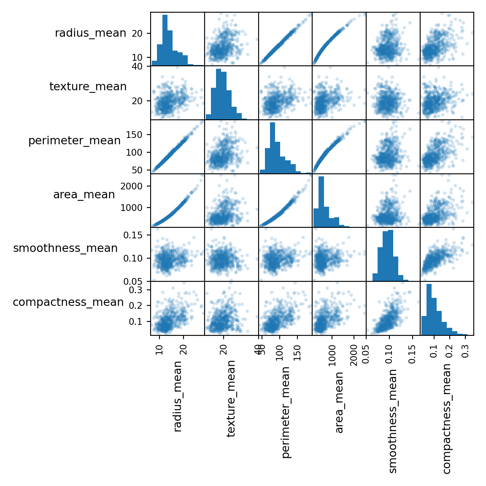

| Topic | Tasks | Activities | Student | Teacher | |
|---|---|---|---|---|---|
| 2 | K-Nearest Neighbors | Build a k-nearest neighbors model and explain how it may be used to predict the values of data points. | Follow along: students will participate in a guided demo of a data mining process building a model using K-Nearest Neighbors and evaluating its accuracy using a Confusion Matrix. | ‘We learned about the KNN algorithm, its advantages and limitations, as well as how to interpret a confusion matrix to evaluate the accuracy of a model.’ | ‘Our goal here is to understand how data mining algorithms work and how they can be applied to real-world problems. As a teacher, my role is to clarify any doubts and ensure that everyone is actively participating. As students, you will be challenged to apply your knowledge to a problem and think critically.’ |
3 Lazy Learning with k-Nearest Neighbors
K-nearest neighbors is an algorithm that is commonly used in data mining. It works by identifying the k-nearest data points to a given point, and using their values to predict the value of the point in question.
3.1 Business Case: Diagnosing Breast Cancer
Breast cancer is the top cancer in women both in the developed and the developing world. In the Netherlands it is the most pervasive form of cancer (“WHO Cancer Country Profiles 2020” n.d.). In order to improve breast cancer outcome and survival early detection remains the most important instrument for breast cancer control. If machine learning could automate the identification of cancer, it would improve efficiency of the detection process and might also increase its effectiveness by providing greater detection accuracy.
3.2 Data Understanding
The data we will be using comes from the University of Wisconsin and is available online as an open source dataset (“UCI Machine Learning Repository: Breast Cancer Wisconsin (Diagnostic) Data Set” n.d.). It includes measurements from digitized images from from fine-needle aspirates of breast mass. The values represent cell nuclei features.
For convenience the data in csv format is stored on Github. We can access it directly using a function for reading csv from the pandas library
url = "https://raw.githubusercontent.com/businessdatasolutions/courses/main/data%20mining/gitbook/datasets/breastcancer.csv"
rawDF = pd.read_csv(url)Using the info() function we can have some basic information about the dataset.
rawDF.info()<class 'pandas.core.frame.DataFrame'>
RangeIndex: 569 entries, 0 to 568
Data columns (total 32 columns):
# Column Non-Null Count Dtype
--- ------ -------------- -----
0 id 569 non-null int64
1 diagnosis 569 non-null object
2 radius_mean 569 non-null float64
3 texture_mean 569 non-null float64
4 perimeter_mean 569 non-null float64
5 area_mean 569 non-null float64
6 smoothness_mean 569 non-null float64
7 compactness_mean 569 non-null float64
8 concavity_mean 569 non-null float64
9 points_mean 569 non-null float64
10 symmetry_mean 569 non-null float64
11 dimension_mean 569 non-null float64
12 radius_se 569 non-null float64
13 texture_se 569 non-null float64
14 perimeter_se 569 non-null float64
15 area_se 569 non-null float64
16 smoothness_se 569 non-null float64
17 compactness_se 569 non-null float64
18 concavity_se 569 non-null float64
19 points_se 569 non-null float64
20 symmetry_se 569 non-null float64
21 dimension_se 569 non-null float64
22 radius_worst 569 non-null float64
23 texture_worst 569 non-null float64
24 perimeter_worst 569 non-null float64
25 area_worst 569 non-null float64
26 smoothness_worst 569 non-null float64
27 compactness_worst 569 non-null float64
28 concavity_worst 569 non-null float64
29 points_worst 569 non-null float64
30 symmetry_worst 569 non-null float64
31 dimension_worst 569 non-null float64
dtypes: float64(30), int64(1), object(1)
memory usage: 142.4+ KBWe can also check visually for patterns.
selDF = rawDF.filter(regex="mean").iloc[:, :6]
fig = scatter_matrix(selDF, alpha=0.2, figsize=(6, 6), diagonal="hist")
for ax in fig.flatten():
ax.xaxis.label.set_rotation(90)
ax.yaxis.label.set_rotation(0)
ax.yaxis.label.set_ha("right")
plt.tight_layout()
plt.gcf().subplots_adjust(wspace=0, hspace=0)
plt.show()
Question:
- What patterns do you observe and to what extend are they surprising??
3.3 Preparation
The first variable, id, contains unique patient IDs. The IDs do not possess any relevant information for making predictions, so we will delete it from the dataset.
cleanDF = rawDF.drop(["id"], axis=1)
cleanDF.head() diagnosis radius_mean ... symmetry_worst dimension_worst
0 B 12.32 ... 0.2827 0.06771
1 B 10.60 ... 0.2940 0.07587
2 B 11.04 ... 0.2998 0.07881
3 B 11.28 ... 0.2102 0.06784
4 B 15.19 ... 0.2487 0.06766
[5 rows x 31 columns]The variable named diagnosis contains the outcomes we would like to predict - ‘B’ for ‘Benign’ and ‘M’ for ‘Malignant’. The variable we would like to predict is called the ‘label’. We can look at the counts for both outcomes, using the value_counts() function. When we set the normalize setting to True we get the the proportions.
cntDiag = cleanDF["diagnosis"].value_counts()
propDiag = cleanDF["diagnosis"].value_counts(normalize=True)
cntDiagdiagnosis
B 357
M 212
Name: count, dtype: int64propDiagdiagnosis
B 0.627417
M 0.372583
Name: proportion, dtype: float64Looking again at the results from the info() function you’ll notice that the variable diagnosis is coded as text (object). Many models require that the label is of type category. The pandas library has a function that can transform a object type to category.
catType = CategoricalDtype(categories=["B", "M"], ordered=False)
cleanDF["diagnosis"] = cleanDF["diagnosis"].astype(catType)
cleanDF["diagnosis"]0 B
1 B
2 B
3 B
4 B
..
564 B
565 B
566 M
567 B
568 M
Name: diagnosis, Length: 569, dtype: category
Categories (2, object): ['B', 'M']The features consist of three different measurements of ten characteristics. We will take three characteristics and have a closer look.
cleanDF[["radius_mean", "area_mean", "smoothness_mean"]].describe() radius_mean area_mean smoothness_mean
count 569.000000 569.000000 569.000000
mean 14.127292 654.889104 0.096360
std 3.524049 351.914129 0.014064
min 6.981000 143.500000 0.052630
25% 11.700000 420.300000 0.086370
50% 13.370000 551.100000 0.095870
75% 15.780000 782.700000 0.105300
max 28.110000 2501.000000 0.163400You’ll notice that the three variables have very different ranges and as a consequence area_mean will have a larger impact on the distance calculation than the smootness_mean. This could potentially cause problems for modeling. To solve this we’ll apply normalization to rescale all features to a standard range of values.
We will write our own normalization function,
def normalize(x):
return (x - min(x)) / (
max(x) - min(x)
) # distance of item value - minimum vector value divided by the range of all vector values
testSet1 = np.arange(1, 6)
testSet2 = np.arange(1, 6) * 10
print(f"testSet1: {testSet1}\n")testSet1: [1 2 3 4 5]print(f"testSet2: {testSet2}\n")testSet2: [10 20 30 40 50]print(f"Normalized testSet1: {normalize(testSet1)}\n")Normalized testSet1: [0. 0.25 0.5 0.75 1. ]print(f"Normalized testSet2: {normalize(testSet2)}\n")Normalized testSet2: [0. 0.25 0.5 0.75 1. ]and apply it to all the numerical variables in the dataframe.
excluded = ["diagnosis"] # list of columns to exclude
# X = cleanDF.loc[:, ~cleanDF.columns.isin(excluded)]
X = cleanDF.drop(excluded, axis=1)
X = X.apply(normalize, axis=0)
X[["radius_mean", "area_mean", "smoothness_mean"]].describe() radius_mean area_mean smoothness_mean
count 569.000000 569.000000 569.000000
mean 0.338222 0.216920 0.394785
std 0.166787 0.149274 0.126967
min 0.000000 0.000000 0.000000
25% 0.223342 0.117413 0.304595
50% 0.302381 0.172895 0.390358
75% 0.416442 0.271135 0.475490
max 1.000000 1.000000 1.000000When we take the variables we’ve selected earlier and look at the summary parameters again, we’ll see that the normalization was successful.
We can now split our data into training and test sets.
y = cleanDF["diagnosis"]
X_train, X_test, y_train, y_test = train_test_split(
X, y, test_size=0.3, random_state=42
)Here, X_train and y_train are the features and labels of the training data, respectively, and X_test and y_test are the features and labels of the test data.
Now we can train and evaluate our kNN model.
3.4 Modeling and Evaluation
KNN is a instance-based learning algorithm. It stores all of the training data and makes predictions based on the similarity between the input instance and the stored instances. The prediction is based on the majority class among the K nearest neighbors of the input instance.
The distance between instances is typically measured using the Euclidean distance. However, other distance measures such as the Manhattan distance or the Minkowski distance can also be used.
The pseudocode for the KNN algorithm is as follows:
for each instance in the test set:
for each instance in the training set:
calculate the distance between the two instances
sort the distances in ascending order
find the K nearest neighbors
predict the class based on the majority class among the K nearest neighbors
To train the knn model we only need one single function from the sklearn library. The fit() function trains the model on the training data. The trained model is applied to the set with test features and the predict() function gives back a set of predicted values for y.
NOTE: Somehow predict() generates error with number columns larger than 15. This is a new issue. It used to work.
knn = KNeighborsClassifier(n_neighbors=5)
knn.fit(X_train.iloc[:,:15], y_train)KNeighborsClassifier()In a Jupyter environment, please rerun this cell to show the HTML representation or trust the notebook.
On GitHub, the HTML representation is unable to render, please try loading this page with nbviewer.org.
KNeighborsClassifier()
# # make predictions on the test set
y_pred = knn.predict((X_test.iloc[:,:15]))Now that we have a set of predicted labels we can compare these with the actual labels. A diffusion table shows how well the model performed.

Here is our own table:
cm = confusion_matrix(y_test, y_pred, labels=knn.classes_)
cmarray([[104, 6],
[ 2, 59]])disp = ConfusionMatrixDisplay(confusion_matrix=cm, display_labels=knn.classes_)
disp.plot()<sklearn.metrics._plot.confusion_matrix.ConfusionMatrixDisplay object at 0x13f8d0df0>plt.show()Questions:
- How would you assess the overall performance of the model?
- What would you consider as more costly: high false negatives or high false positives levels? Why?
- Try to improve the model by changing some parameters of the
KNeighborsClassifier()function